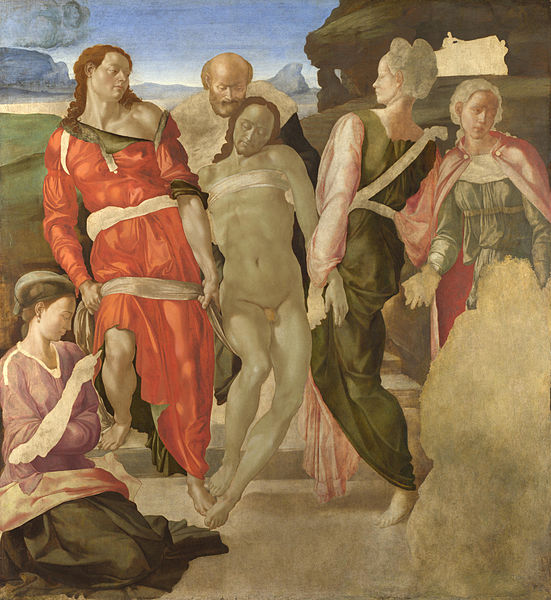
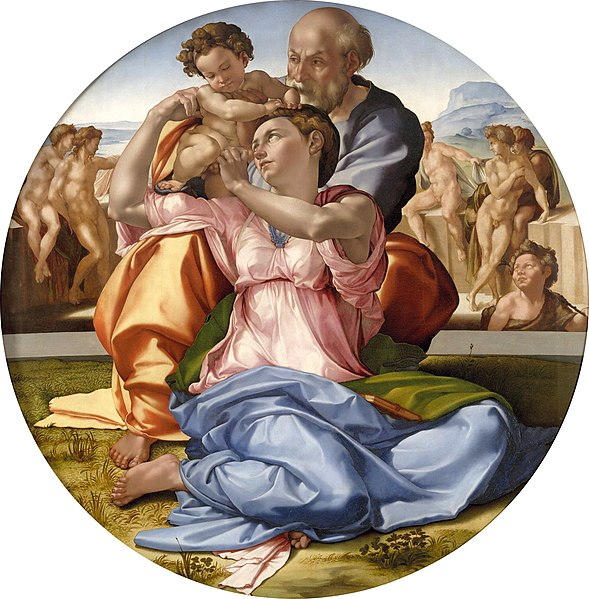
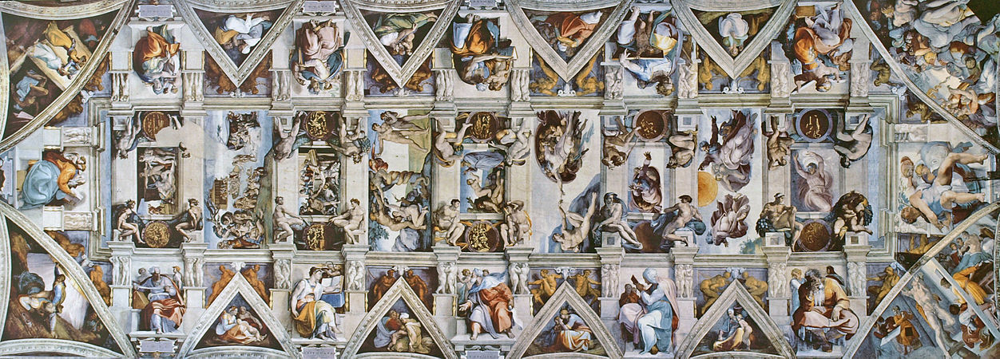
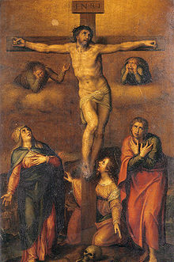
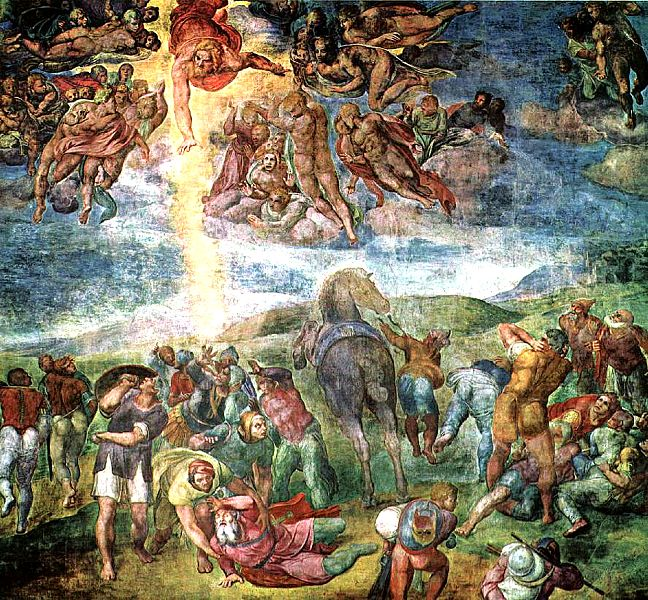

Michelangelo Buonarroti, conocido en español como Miguel Ángel, fue un arquitecto, escultor y pintor italiano renacentista, considerado uno de los más grandes artistas de la historia tanto por sus esculturas como por sus pinturas y obra arquitectónica.
Santo Entierro
El Santo Entierro es un cuadro inacabado atribuido al pintor renacentista italiano Miguel Ángel. La datación es alrededor de 1500-1501. Se usó una técnica mixta. Mide 162 centímetros de alto y 150 cm. de ancho. Se conserva en la National Gallery de Londres, Reino Unido
Tondo Doni
La Sagrada Familia, conocida como Tondo Doni, es un cuadro del pintor renacentista italiano Miguel Ángel. Su diámetro es de 120 centímetros. Se considera que se ejecutó entre 1503 y 1504 o, con mayor probabilidad, en 1506.
Bóveda de la Capilla Sixtina
La bóveda de la Capilla Sixtina de Roma es un conjunto de pinturas al fresco realizadas para decorar la bóveda de la Capilla Sixtina, en la Ciudad del Vaticano.
Crucifixión
La Crucifixión de San Pedro es un fresco del pintor renacentista italiano Miguel Ángel. Fue ejecutado entre 1546 y 1550 en la pared de la Capilla Paulina del Palacio Apostólico, en la Ciudad del Vaticano. Es un fresco que mide 6,25 metros de alto y 6,62 metros de ancho.
Capilla Paulina
La Capilla Paulina es una pequeña capilla privada situada en el interior del Palacio Papal del Vaticano, de hecho la capilla se sitúa muy cerca de la famosa Capilla Sixtina; ambas salas están separadas por una pequeña sala conocida como la Sala Regia